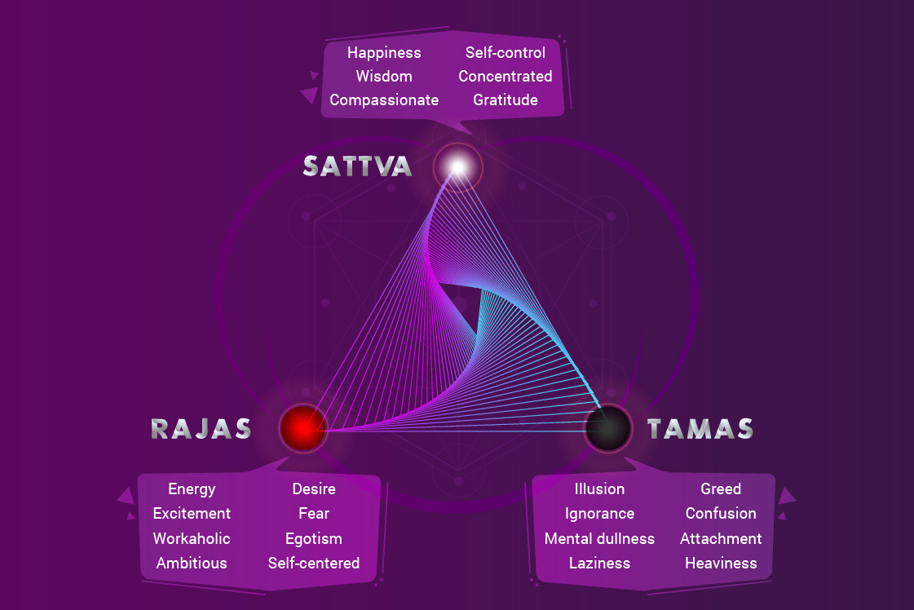

সরল ভাবার্থ
কেউ এক মুহূর্তের জন্যও কর্ম না করে থাকতে পারে না। কারণ প্রকৃতির গুণসমূহ (সত্ত্ব, রজ ও তম) সকল প্রাণীকে দিয়ে জোরপূর্বক (অবশ হয়ে) কর্ম করিয়ে নেয়।
বিস্তারিত ধর্মীয় ব্যাখ্যা
শ্রীকৃষ্ণ এখানে একটি বড় বৈজ্ঞানিক ও আধ্যাত্মিক সত্য বলছেন। তিনি বলছেন যে এই জগতে কেউ স্থির বা কর্মহীন নয়। আমরা যখন ঘুমিয়ে থাকি, তখনও আমাদের শ্বাস চলে, হৃদপিণ্ড কাজ করে, আমাদের মন স্বপ্ন দেখে। অর্থাৎ শরীর ও মনের স্তরে কাজ সবসময় চলছেই। প্রকৃতি আমাদের এক মুহূর্তের জন্যও অলস হয়ে থাকতে দেয় না। আমাদের স্বভাবের ভেতরে যে তিনটি গুণ আছে—সত্ত্ব (শান্তি ও জ্ঞান), রজ (উদ্যম ও চঞ্চলতা) এবং তম (অলসতা ও অজ্ঞতা)—তারাই আমাদের দিয়ে কাজ করিয়ে নেয়।
অর্জুন যে বলছেন তিনি যুদ্ধ করবেন না, সেটি আসলে সম্ভব নয়। তাঁর ভেতরে ক্ষত্রিয়োচিত 'রজোগুণ' প্রবল। তিনি যদি আজ যুদ্ধক্ষেত্র ছেড়ে চলেও যান, তবে সেই রজোগুণ তাঁকে বনের ভেতরে গিয়েও কোনো না কোনো কাজে ব্যস্ত রাখবে। হয়তো তিনি সেখানে গিয়ে পশুপাখি শিকার করবেন বা কারও সাথে ঝগড়া করবেন। অর্থাৎ কর্ম থেকে পালানোর কোনো পথ নেই।
ভগবান এখানে 'অবশঃ' শব্দটি ব্যবহার করেছেন। এর অর্থ হলো আমরা প্রকৃতির হাতের পুতুল হয়ে কাজ করছি যতক্ষণ না আমাদের আত্মজ্ঞান হচ্ছে। এই শ্লোকটি আমাদের শেখায় যে জীবন মানেই হলো গতি। কাজ বন্ধ করা আধ্যাত্মিকতা নয়, বরং কাজের দিক পরিবর্তন করা আধ্যাত্মিকতা। যদি আমরা প্রকৃতির গুণের বশে কাজ করি, তবে আমরা বন্ধনে পড়ি। কিন্তু যদি সেই একই কাজ ভগবানের উদ্দেশ্যে করি, তবে আমরা মুক্ত হই।
ধর্মীয় বিচারে, এটি হলো প্রকৃতির শক্তিকে স্বীকার করা। ভগবান অর্জুনকে বলছেন যে তুমি নিজেকে খুব বড় মনে করছ যে তুমি যুদ্ধ করবে না, কিন্তু তোমার প্রকৃতিই তোমাকে দিয়ে যুদ্ধ করিয়ে নেবে। তাই অহংকার ত্যাগ করে আমার নির্দেশে কাজ করো। এই শ্লোকটি আমাদের অলসতা ত্যাগ করে নিজের কর্তব্য পালনে উৎসাহিত করে। কারণ কাজ আমাদের করতেই হবে, তাই কেন আমরা শ্রেষ্ঠতম কাজটি করব না?

[Image illustrating the three Gunas (Sattva, Rajas, Tamas) driving human actions]